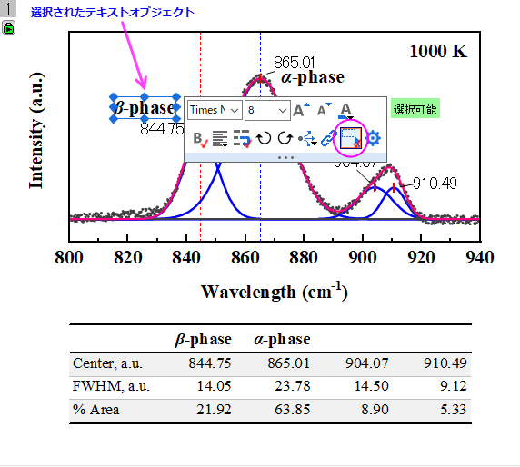
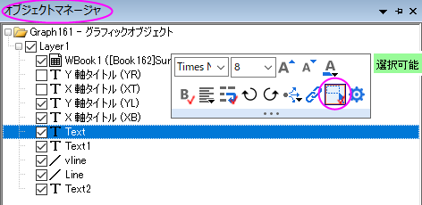
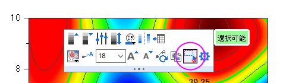

FAQ-1158 プロット、レイヤ、テキスト オブジェクトなどのグラフ要素を選択できないのはなぜですか?
Cannot-select-graph-layer-plot
最終更新日：2022/11/10
 YouTube動画「Control Selectable items for Layers, Plots and Labels in a Graph」
YouTube動画「Control Selectable items for Layers, Plots and Labels in a Graph」
グラフレイヤ、プロット、グラフィックオブジェクトなどのほとんどのグラフ要素は、編集したい要素をクリックすることで編集可能になります。この動作は直感的で便利ですが、うまくいかない場合もあります。
- 時間をかけて様々な要素をグラフページに上に正確に配置したので誤って配置を変えてしまうと困る
- プロットを選択しようとしていますが、別のプロットが部分的に上側にあり、うまく選択できない
- 等高線図でレイヤを選択したいのにデータプロットしか選択できない
ミニ ツールバーを使用して要素の選択を無効化
必要に応じて、ミニツールバーの選択可能ボタンを使って、要素を選択状態にしないようにすることができます。クリックして無効化すると、ボタンの「赤いチェックマーク」が非表示になります。
- 
オブジェクトマネージャを使用して要素の選択を元に戻す
- まず、オブジェクトマネージャには2つのビュー (プロットを表示とグラフオブジェクトの表示) があり、オブジェクトマネージャの空の部分を右クリックして目的のビューを選択すると、切り替えできます。
- オブジェクトマネージャで、選択不可に設定されている要素を選択して昇ミニツールバーで選択可能ボタンをクリックします。これによりボタンの赤いチェックマークは表示されるようになります。
- 
- これで、グラフ ウィンドウ内の選択不可の要素 (グラフレイヤー、プロット、グラフィックオブジェクトなど) をクリックして選択し、編集できるようになります。
等高線図 （特殊な場合）
等高線図をクリックすると、デフォルトでデータプロットが選択されます。レイヤを選択する場合は、次のいずれかの操作が必要です。
- Altキーを押してプロットをクリックします。
- オブジェクトマネージャの、プロットを表示ビューでレイヤアイコンをクリックします。
- 等高線図をクリックし、ミニ ツールバーが表示されたら、選択可能ボタンをクリックしてデータプロットの選択を無効にします。そしてプロットをクリックするとレイヤを選択できます。
- 
キーワード:グラフィックオブジェクト, グラフ編集, オブジェクトマネージャ, 選択可能, プロットを表示, グラフィックオブジェクトの表示, ミニツールバー, 等高線図, グラフレイヤ